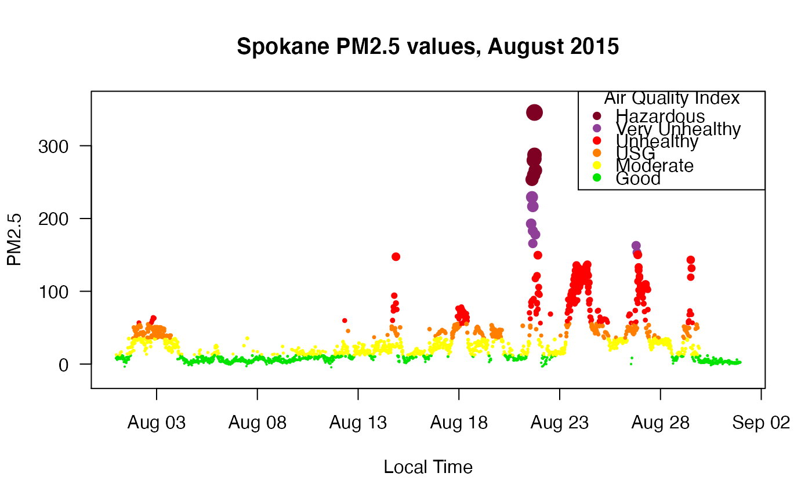
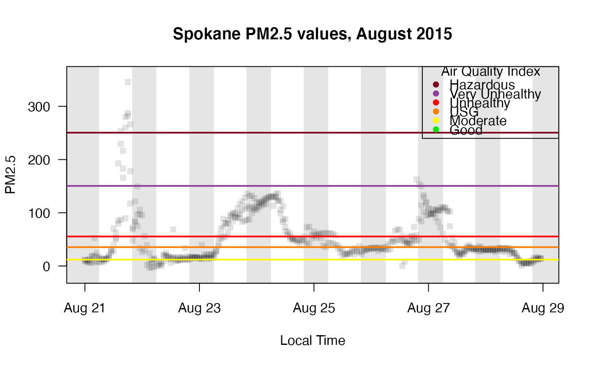

Creates a time series plot of PM2.5 data from a ws_monitor object (see note below). Optional arguments color code by AQI index, add shading to indicate nighttime, and adjust the time display (local vs. UTC).
When a named style is used, some graphical parameters will be
overridden. Available styles include:
aqidots-- hourly values are individually colored by 24-hr
AQI levels
gnats-- semi-transparent dots like a cloud of gnats
monitor_timeseriesPlot( ws_monitor, monitorID = NULL, tlim = NULL, localTime = TRUE, style = NULL, shadedNight = FALSE, add = FALSE, gridPos = "", gridCol = "black", gridLwd = 1, gridLty = "solid", dayLwd = 0, hourLwd = 0, hourInterval = 6, ... )
| ws_monitor | ws_monitor object. |
|---|---|
| monitorID | Monitor ID for one or more monitor in the ws_monitor object. |
| tlim | Optional vector with start and end times (integer or character representing YYYYMMDD[HH]). |
| localTime | Logical specifying whether |
| style | Custom styling, one of |
| shadedNight | Add nighttime shading. |
| add | Logical specifying whether to add to the current plot. |
| gridPos | Position of grid lines either "over", "under" ("" for no grid lines). |
| gridCol | Grid line color. |
| gridLwd | Grid line width. |
| gridLty | Grid line type. |
| dayLwd | Day marker line width. |
| hourLwd | Hour marker line width. |
| hourInterval | Interval for grid (max = 12). |
| ... | Additional arguments to be passed to |
Remember that a ws_monitor object can contain data from more than one
monitor, and thus, this function may produce a time series of data from
multiple monitors. To plot a time series of an individual monitor's data,
specify a single monitorID.
library(PWFSLSmoke) N_M <- Northwest_Megafires # monitor_leaflet(N_M) # to identify Spokane monitorIDs Spokane <- monitor_subsetBy( N_M, stringr::str_detect(N_M$meta$monitorID, "^53063") ) monitor_timeseriesPlot(Spokane, style = "gnats")monitor_timeseriesPlot( Spokane, tlim = c(20150821, 20150828), shadedNight = TRUE, style = "gnats" )